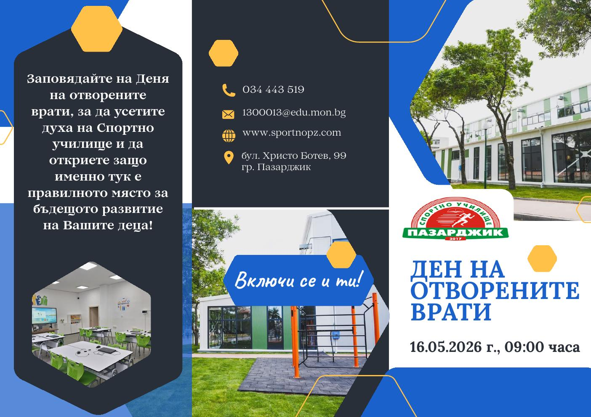

Спортно училище – град Пазарджик • 16.05.2026 г., 09:00 часа
Денят на отворените врати представя духа на Спортно училище, модерната материална база, екипа от учители и треньори и условията в училището. Посланието на инициативата е свързано със спорт, здраве, приятелство, увереност и успех.
„Пиратско съревнование – Таен остров“ с два отбора и различни маршрути към общо съкровище.
Представяне на училищната среда, материалната база, учителите и треньорите.
„Тренирам, уча, успявам!“ – спортът като път към сила, увереност и успех.
